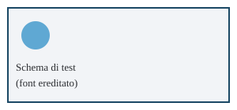

Capitolo di esempio
Data di verifica delle fonti: 20 settembre 2026.
Primo sottotitolo
Questo primo paragrafo serve a verificare che il testo lungo in italiano venga impaginato correttamente nel PDF generato dallo script di build, con particolare attenzione alla resa dei font Source Serif 4 per il corpo del testo e Source Sans 3 per i titoli. Il paragrafo contiene frasi di lunghezza variabile, punteggiatura complessa (virgole, punti e virgola; due punti) e alcune parole con accenti come città, però, perché e università, così da controllare che i caratteri accentati siano renderizzati correttamente e che il subset latin-ext dei font copra tutti i glifi necessari alla lingua italiana.
Secondo sottotitolo
Il secondo paragrafo prosegue la prova di impaginazione con un testo altrettanto esteso, utile a valutare l'interlinea, la giustificazione e il comportamento del testo quando supera la prima pagina disponibile. Si parla qui, a titolo di esempio neutro, di anemometri, di sensori barometrici e di unità di misura come i metri al secondo, i gradi Celsius e i pascal, per avere anche numeri e simboli tecnici nel flusso del testo, ad esempio 12,4 m/s oppure 1013 hPa, oltre a una sigla tecnica come IMU resa in monospazio con l'elemento IMU.
Questo terzo paragrafo chiude la sezione di prova con un contenuto altrettanto lungo, includendo un rimando a uno schema successivo e una breve digressione descrittiva priva di contenuto normativo reale, dato che questo file esiste esclusivamente per verificare la toolchain di build e non fa parte della guida vera e propria. Si controlla qui anche la resa del grassetto e del corsivo, come in testo in grassetto e in testo in corsivo, per assicurarsi che i pesi 600 e 700 e lo stile italico dei font siano caricati correttamente dal foglio di stile.
Tabella di prova
| Parametro | Valore | Unità |
|---|---|---|
| Velocità del vento | 12,4 | m/s |
| Pressione | 1013 | hPa |
| Temperatura | 18 | °C |
Schema vettoriale inline
Immagine da file

In sintesi
- Il capitolo di prova copre titolo, sottotitoli, paragrafi lunghi, tabella, box e immagini.
- Serve solo a verificare la toolchain di build, non fa parte della guida.